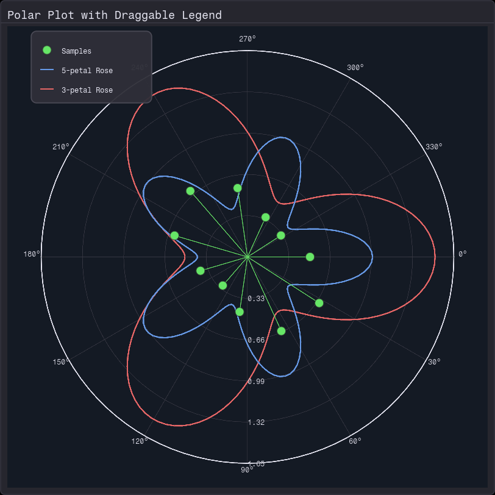
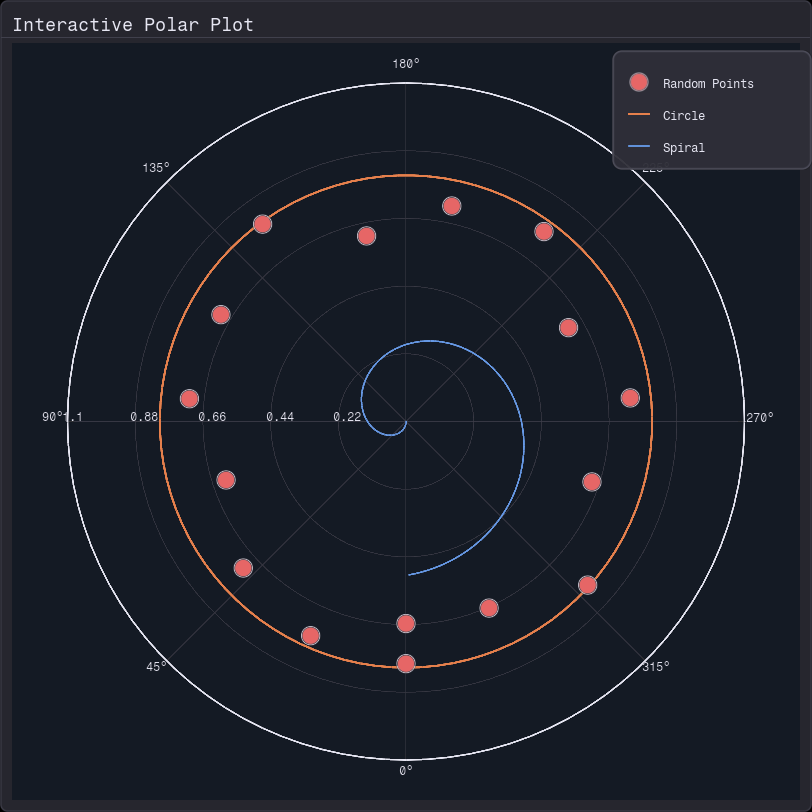

Polar Plot Legend
Legends work with polar plots just like cartesian plots, thanks to the unified plot element system. Simply add label parameters to your plot elements and wrap the plot with a Modal containing a Legend.
using Fugl
using Fugl: Text
# Create three different polar patterns
theta = range(0, 2π, length=150)
r1 = 1.0f0 .+ 0.5f0 .* cos.(3.0f0 .* theta) # Rose curve
r2 = 0.7f0 .+ 0.3f0 .* cos.(5.0f0 .* theta) # Smaller rose
# Discrete samples
theta_stem = range(0, 2π, length=12)
r_stem = 0.5f0 .+ 0.2f0 .* sin.(2.0f0 .* theta_stem)
# Modal state for legend position
legend_modal_state = Ref(ModalState(
offset_x=50.0f0,
offset_y=50.0f0
))
# Polar plot state
polar_state = Ref(PolarState(
theta_start=0.0f0,
theta_direction=:counterclockwise,
num_angular_lines=12,
angular_label_format=:degrees
))
# Dark theme styling
modal_style = ModalStyle(
background_color=Vec4{Float32}(0.0f0, 0.0f0, 0.0f0, 0.0f0)
)
legend_card_style = ContainerStyle(
background_color=Vec4f(0.18, 0.18, 0.22, 0.95),
border_color=Vec4f(0.3, 0.3, 0.35, 1.0),
border_width=2.0f0,
padding=12.0f0,
corner_radius=8.0f0
)
plot_card_style = ContainerStyle(
background_color=Vec4f(0.15, 0.15, 0.18, 1.0),
border_color=Vec4f(0.25, 0.25, 0.30, 1.0),
border_width=1.5f0,
padding=12.0f0,
corner_radius=6.0f0
)
title_text_style = TextStyle(size_px=18, color=Vec4f(0.9, 0.9, 0.95, 1.0))
legend_text_style = TextStyle(size_px=12, color=Vec4f(0.9, 0.9, 0.95, 1.0))
polar_style = PolarStyle(
background_color=Vec4f(0.08, 0.10, 0.14, 1.0),
show_radial_grid=true,
show_angular_grid=true,
radial_grid_color=Vec4f(0.25, 0.25, 0.30, 1.0),
angular_grid_color=Vec4f(0.25, 0.25, 0.30, 1.0),
show_outer_circle=true,
outer_circle_color=Vec4f(0.9, 0.9, 0.95, 1.0),
outer_circle_width=2.0f0,
label_color=Vec4f(0.9, 0.9, 0.95, 1.0)
)
function MyApp()
# Create plot elements with labels
elements = [
PolarLine(
Float32.(r1),
Float32.(theta),
color=Vec4f(0.9, 0.4, 0.4, 1.0),
width=2.5f0,
label="3-petal Rose"
),
PolarLine(
Float32.(r2),
Float32.(theta),
color=Vec4f(0.4, 0.6, 0.9, 1.0),
width=2.5f0,
label="5-petal Rose"
),
PolarStem(
Float32.(r_stem),
Float32.(theta_stem),
line_color=Vec4f(0.4, 0.9, 0.4, 1.0),
line_width=1.5f0,
fill_color=Vec4f(0.4, 0.9, 0.4, 1.0),
border_color=Vec4f(0.2, 0.2, 0.2, 1.0),
marker_size=8.0f0,
border_width=1.0f0,
label="Samples"
)
]
# Wrap plot in modal with legend
Modal(
# Background: The polar plot
Card(
"Polar Plot with Draggable Legend",
PolarPlot(
elements,
polar_style,
polar_state[],
(new_state) -> polar_state[] = new_state
),
style=plot_card_style,
title_style=title_text_style
),
# Modal child: The legend
Container(
Legend(elements, text_style=legend_text_style, spacing=8.0f0, item_height=24.0f0),
style=legend_card_style
),
child_width=200.0f0,
child_height=120.0f0,
state=legend_modal_state[],
style=modal_style,
on_state_change=(new_state) -> legend_modal_state[] = new_state,
capture_clicks_outside=false
)
end
screenshot(MyApp, "polarLegend.png", 812, 812);
How It Works
The unified plot element system means polar plots use the same LinePlotElement, ScatterPlotElement, and StemPlotElement types as cartesian plots. This means legends automatically work with polar plots without any special handling.
Key points:
- Add
label="..."to yourPolarLine,PolarScatter, orPolarStemconstructors - Pass the elements array to both
PolarPlotandLegend - Wrap everything in a
Modalto make the legend draggable - Set
capture_clicks_outside=falseso plot interactions still work
Interactive Legend Example
using Fugl
using Fugl: Text
# Create multiple data series
theta = range(0, 2π, length=100)
# Spiral
theta_spiral = range(0, 4π, length=300)
r_spiral = theta_spiral ./ (4π)
# Circle
r_circle = fill(0.8f0, length(theta))
# Scatter points
theta_scatter = range(0, 2π, length=16)
r_scatter = 0.6f0 .+ 0.2f0 .* rand(Float32, 16)
# Modal state
legend_modal_state = Ref(ModalState(
offset_x=650.0f0,
offset_y=50.0f0
))
polar_state = Ref(PolarState(
theta_start=Float32(π/2),
theta_direction=:counterclockwise,
num_angular_lines=8,
angular_label_format=:degrees
))
# Styling
modal_style = ModalStyle(background_color=Vec4{Float32}(0.0f0, 0.0f0, 0.0f0, 0.0f0))
legend_card_style = ContainerStyle(
background_color=Vec4f(0.18, 0.18, 0.22, 0.95),
border_color=Vec4f(0.3, 0.3, 0.35, 1.0),
border_width=2.0f0,
padding=12.0f0,
corner_radius=8.0f0
)
plot_card_style = ContainerStyle(
background_color=Vec4f(0.15, 0.15, 0.18, 1.0),
border_color=Vec4f(0.25, 0.25, 0.30, 1.0),
border_width=1.5f0,
padding=12.0f0,
corner_radius=6.0f0
)
title_text_style = TextStyle(size_px=18, color=Vec4f(0.9, 0.9, 0.95, 1.0))
legend_text_style = TextStyle(size_px=12, color=Vec4f(0.9, 0.9, 0.95, 1.0))
polar_style = PolarStyle(
background_color=Vec4f(0.08, 0.10, 0.14, 1.0),
show_radial_grid=true,
show_angular_grid=true,
radial_grid_color=Vec4f(0.25, 0.25, 0.30, 1.0),
angular_grid_color=Vec4f(0.25, 0.25, 0.30, 1.0),
show_outer_circle=true,
outer_circle_color=Vec4f(0.9, 0.9, 0.95, 1.0),
outer_circle_width=2.0f0,
label_color=Vec4f(0.9, 0.9, 0.95, 1.0)
)
function MyApp()
elements = [
PolarLine(
Float32.(r_spiral),
Float32.(theta_spiral),
color=Vec4f(0.4, 0.6, 0.9, 1.0),
width=2.0f0,
label="Spiral"
),
PolarLine(
Float32.(r_circle),
Float32.(theta),
color=Vec4f(0.9, 0.5, 0.3, 1.0),
width=2.5f0,
label="Circle"
),
PolarScatter(
Float32.(r_scatter),
Float32.(theta_scatter),
fill_color=Vec4f(0.9, 0.4, 0.4, 1.0),
border_color=Vec4f(0.9, 0.9, 0.95, 1.0),
marker_size=10.0f0,
border_width=1.5f0,
label="Random Points"
)
]
Modal(
Card(
"Interactive Polar Plot",
PolarPlot(
elements,
polar_style,
polar_state[],
(new_state) -> polar_state[] = new_state
),
style=plot_card_style,
title_style=title_text_style
),
Container(
Legend(elements, text_style=legend_text_style, spacing=8.0f0, item_height=24.0f0),
style=legend_card_style
),
child_width=200.0f0,
child_height=120.0f0,
state=legend_modal_state[],
style=modal_style,
on_state_change=(new_state) -> legend_modal_state[] = new_state,
capture_clicks_outside=false
)
end
screenshot(MyApp, "polarLegendInteractive.png", 812, 812);